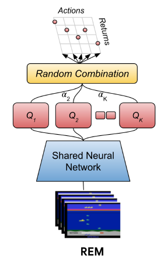
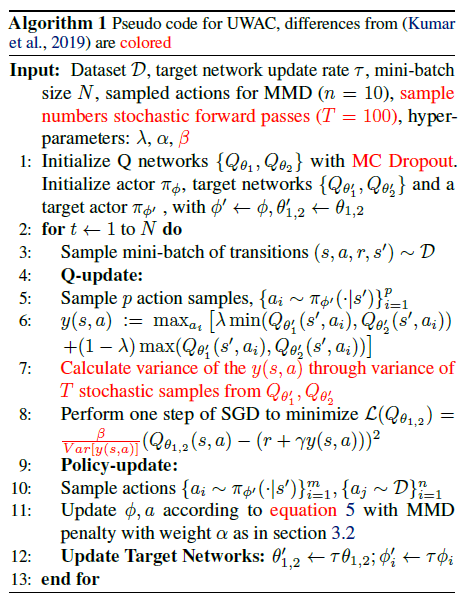
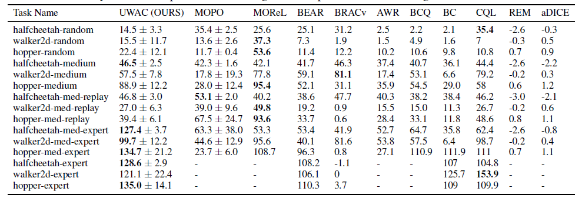

离线强化学习中的不确定性
不确定性（uncertainty）在机器学习、CV里研究的比较多。在训练好的模型中，我们给出一个输入，模型会给我们一个输出。但是有时候我们不只是要一个输出，我们还需要输出模型预测出该输出的置信度，即不确定性，辅助我们更好的进行决策。这样对于OOD（Out-of-distribution）的检测很有帮助。
论文[1]在CV领域把不确定性分为了两类：
- Aleatoric uncertainty，也就是随机不确定性，也可以称为数据不确定性。它来源于训练数据本身的噪声，是随机而且固定的，是无法通过增加数据减小的。
- Epistemic uncertainty，也就是认知不确定性，也可以称为模型不确定性。这种主要是由于模型预测不好导致的，可以通过增加数据去解决这个问题。
在离线强化学习中，我们主要研究模型不确定性。但是计算不确定性函数并在其上运行RL算法往往与策略约束方法没有太大区别，所以需要一些其他的方法：
- 在Model-based的强化学习中，使用的方式是（待更新）
- 在Model-free的强化学习中，主要是用集成的方式和MC Dropout的方式来对Q函数的不确定性进行建模。
具体来说，我们可以把策略的更新写为：
\[\pi_{k+1} = \argmax_{\pi} \mathbb{E}_{a\sim \mathcal{D}}[\mathbb{E}_{a\sim \pi(a|s)}[\mathbb{E}_{Q^\pi_{k+1}\sim \mathcal{P}_\mathcal{D}(Q^\pi)}[Q^\pi_{k+1}(s,a)] - \alpha Unc(\mathcal{P}_\mathcal{D}(Q^\pi))]]\]
在这里，$\mathcal{P}_\mathcal{D}$是给定数据集，Q函数的集合，而$Unc$就是Q集合的不确定值。这样，在不确定值大的时候策略趋于保守。
集成方法
这个方法来自文献[2]，是发表在ICML'20上的一篇文章。
它的思想相当简单，就是同时学习N个不同参数的Q网络，每次更新时候选择一个它们的凸组合，然后组合得到新的一个Q值：
\[Q(s,a)=\sum_{i=1}^N \alpha_iQ_{\phi_i}(s,a), \sum_{i=1}^N\alpha_i=1\]
其余的更新方式就类似于普通的DQN。这个方案比起之前提出的独立学习多个Q网络的，然后选择的时候投票选择的Bootstrap ensemble方法来说更优。因为Bootstrap ensemble方法虽然是利用到了不确定性，但是这个集成方案中，实际上Q值很容易趋同，缺少多样性，导致不确定性估计的错误。不确定性的估计本身也需要策略具有一定的多样性。
我复现了这个方法（代码），但是实际效果并不好。仔细研读论文发现一个问题：可能要在覆盖面较广的专家数据集上训练才会有比较好的效果。
Monte Carlo Dropout方法
这个方法来自文献[3]，是发表在ICML'21上的一篇spotlight文章。
建模不确定性需要用到贝叶斯深度学习。在离线强化学习中，我们令$X=(s,a)$，即状态动作对；而Y表示真实的Q值；$\theta$是Q函数的参数。按照贝叶斯的角度，我们需要最大化$p(\theta|X,Y)$：
\[p(\theta|X, Y) = \frac{P(Y|X,\theta)P(\theta)}{P(Y|X)}\]
但是P(Y|X)是无法获得的。这里是使用Dropout作为变分推断的近似（论文[4]中详细的说明了这个过程，后续补充），具体来说，在初始化Q网络的时候进行Dropout，然后在测试和训练的时候都Dropout。我们采样$T$次，不确定性可以用$Q$的近似预测方差表示为：
\[\mathbb{V}[Q(s,a)] \approx \sigma^2 + \frac{1}{T}\sum_{i=1}^T\hat{Q}_t(s,a)^T\hat{Q}_t(s,a) - \mathbb{E}[\hat{Q}(s,a)]^T\mathbb{E}[\hat{Q}(s,a)]\]
其中，$\sigma$项是数据不确定性，后面两项是模型不确定性，UWAC（Uncertainty Weighted Actor-Critic）主要使用后两项来权衡OOD样本的影响。具体来说，它对训练的策略进行加权：
\[\pi'(a|s) = \frac{\beta}{\mathbb{V}[Q_0^{\pi'}(s,a)]}\pi(a|s)/Z(s) \\ Z(s) = \int_a \frac{\beta}{\mathbb{V}[Q_0^{\pi'}(s,a)]}\pi(a|s) da\]
这里$Q_0^{\pi'}(s,a)$指的是上一轮迭代得到的Q值。文章给出了理论证明更新这样的策略对OOD训练样本产生更好的收敛特性（理论部分待更新）。此外，策略的变化也会导致Actor和Critic中的损失函数的变化。
Critic的损失函数：
\[\mathcal{L}(Q_\theta)=\mathbb{E}_{(s'|s,a)\sim D}\mathbb{E}_{a\sim \pi}\Big[\frac{\beta}{\mathbb{V}[Q_0^{\pi'}(s,a)]}*Err(s,a,s',a')^2\Big]\]
这个$Err$函数就是标准的当前Q值与目标Q值的损失。Actor的损失函数：
\[\mathcal{L}(\pi)=-\mathbb{E}_{a\sim \pi}\Big[\frac{\beta}{\mathbb{V}[Q_0^{\pi'}(s,a)]}Q_\theta(s,a)\Big]\]
这个损失函数直观地降低了在OOD样本上最大化Q函数的概率，进一步阻止了预测的Q值函数爆炸。
UWAC是在基线算法BEAR$^{[5]}$上进行改进的，伪代码如下：
UWAC的做法是很直观的，并且对原基线算法的改动很小（红色标记）。UWAC用dropout的方式得到多个Q值。如果本身我们能对这个样本进行准确估计的时候，这个方差就会比较小，从而使得策略更偏向于选择这个样本对应的动作。如果不能准确估计则相反。
实验结果如下：
从这个实验结果我们能够看出一些问题：UWAC在专家数据集上的表现很好，超过了现有的其他方法。但是在次优甚至随机的数据集中表现就和他的基线算法BEAR区别不太大。
总结
除了这些方法，已经用于强化学习的建模不确定性的方法还有不少，比如分布式强化学习。但是，不确定性的估计本身是依赖于数据质量的，而这样加权的学习方法只能解决策略估计的准确度问题，但是却很难解决策略估计不好的问题。也就是说，不确定性本身是一个很重要的指标，但是它的使用（以目前方法来说）并不能从根本上解决训练出策略不足够优的问题（就算估计的很准，策略不好那又能怎么样呢？）。如何使得这样的方法在次优甚至随机的数据集上都能有较好的表现是一个值得研究的问题。
参考文献
[1] Kendall, Alex, and Yarin Gal. "What Uncertainties Do We Need in Bayesian Deep Learning for Computer Vision?." Advances in neural information processing systems (NeurIPS), 2017.
[2] Agarwal, R., Schuurmans, D., and Norouzi, M. An optimistic perspective on offline reinforcement learning. In International Conference on Machine Learning, pp. 104–114. PMLR, 2020.
[3] Wu, Yue, et al. "Uncertainty Weighted Actor-Critic for Offline Reinforcement Learning." International Conference on Machine Learning (ICML). PMLR, 2021.
[4] Gal, Y. and Ghahramani, Z. Dropout as a bayesian approximation: Representing model uncertainty in deep learning. In international conference on machine learning (ICML), pp.1050–1059, 2016.
[5] Kumar, A., Fu, J., Soh, M., Tucker, G., and Levine, S. Stabilizing off-policy q-learning via bootstrapping error reduction. In Advances in Neural Information Processing Systems (NeurIPS), 2019.